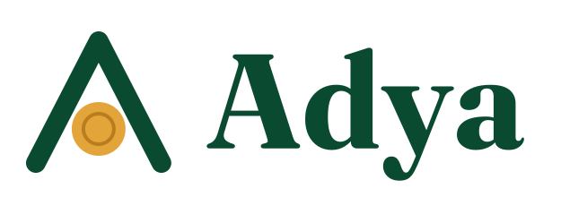
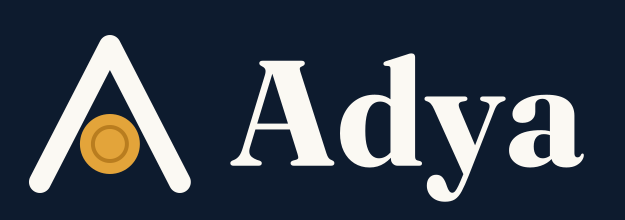

Une solution SoluGisLa caisse commune de votre famille, de votre amicale ou de votre mutuelle.
Cotisations, capital commun, solidarité, votes et vie du groupe : tout est suivi dans une application simple, sur le téléphone de chaque membre, et chacun voit les mêmes chiffres.
Ce qu’Adya fait pour votre groupe
Cotisations et parts
Chaque versement est enregistré par la trésorerie. Les parts du capital commun, les arriérés et le solde se calculent tout seuls.
Fonds et solidarité
Capital commun, fonds de solidarité, fonds de fonctionnement : chaque versement est réparti selon les règles de votre charte.
Cotisations exceptionnelles
Funérailles, mariage : lancez une collecte à montant fixe ou libre, suivez qui a participé et l’aide remise.
Reçus et bilans
Un reçu numéroté pour chaque versement, avec un code d’authenticité. Bilans mensuels publiés pour tous.
Décisions et projets
Votes avec date de clôture, suivi des projets étape par étape, charte du groupe toujours à portée de main.
Vie du groupe
Nouvelles, agenda, anniversaires et murs de vœux : le groupe reste uni entre deux réunions.
Vos données restent à vous
- Adya est installée dans le compte Google de votre groupe : les données sont dans votre propre classeur Google Sheets.
- Chaque membre se connecte avec son code personnel ou avec Face ID, et retrouve l’icône du groupe sur l’écran d’accueil de son téléphone.
- Export complet vers Excel à tout moment, et sauvegarde automatique chaque semaine.